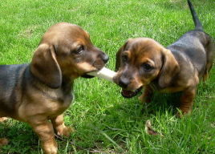

The answer when you need pictures of cute puppies to placehold your designs or code. You can trust them.
Just put your image size (width & height) after our URL and you'll get a placeholder. You can also choose the image you want with and add some text over the images. So you can get your fully-customized placeholders for your layouts. Check out the dogs and the docs! ;-)
Like this: http://placepuppy.it/200/300